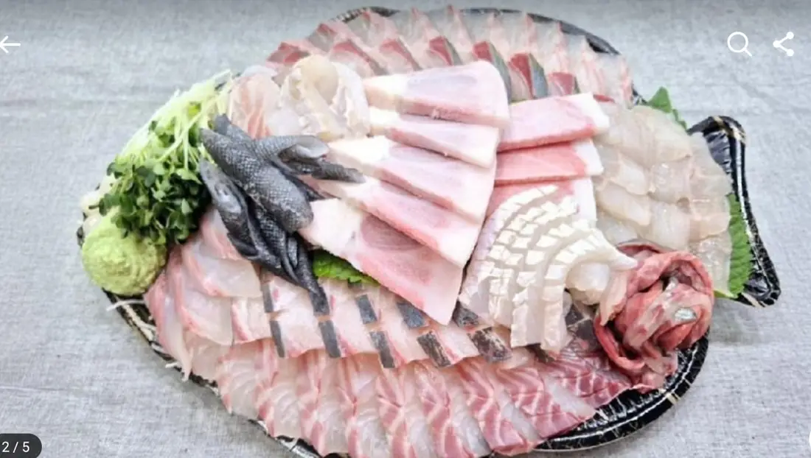
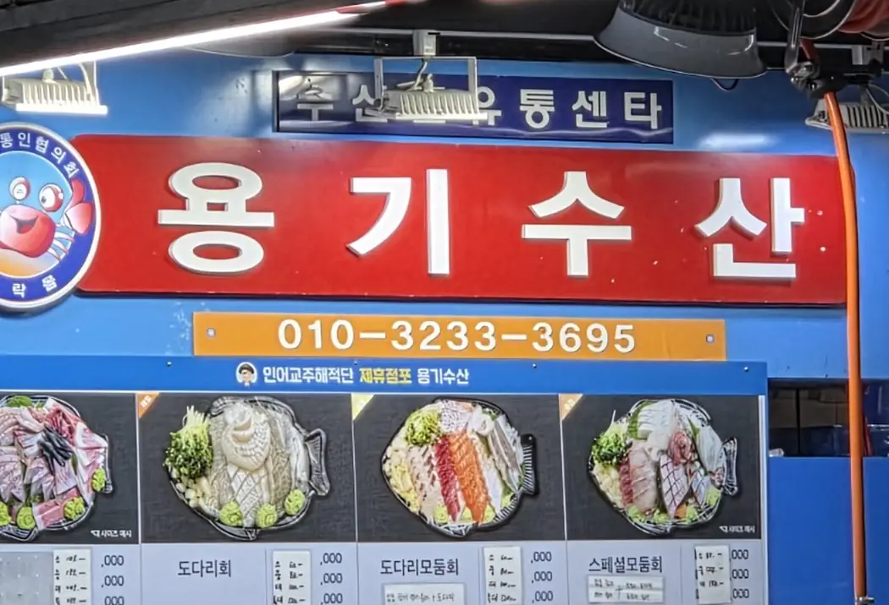
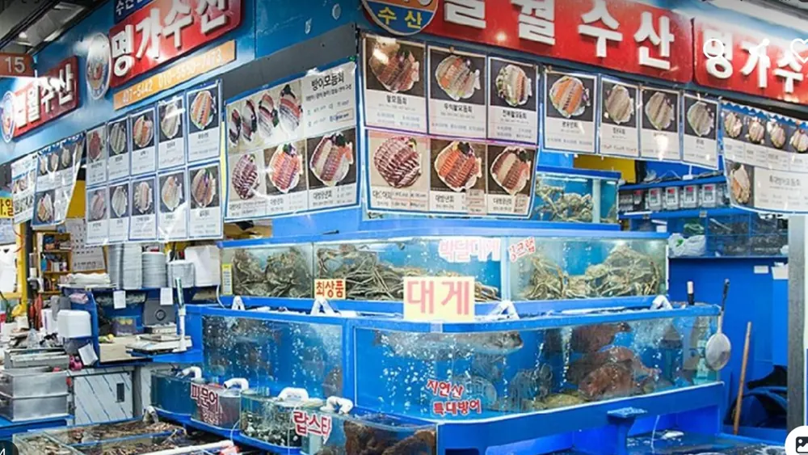

× Lexid
× Lexid제공해주신 간판·상품 사진을 규격별로 크롭하고 모바일에서 잘리지 않도록 레이아웃을 설계합니다.
GARAK MARKET · BLOGGER BRANDING SERVICE가게는 가락몰에,
가게는 가락몰에,
이야기는 검색 속에.
우리 매장의 사진, 대표 메뉴, 가격 안내, 찾아오는 길을 모바일 친화적인 Google Blogger 홍보 블로그로 정리합니다. 매장 소개 웹사이트와 블로그를 연계해 상인을 위한 디지털 명함을 만들어 드립니다.
※ Google 공인 파트너 또는 검색 순위 보장 서비스가 아닙니다.

용기수산, 제철의 맛
가락몰의 활어회 · 오마카세 · 제철 모둠회 메뉴를 한눈에
매장 소개메뉴판길찾기
✓ 모바일 최적화
✓ 제공 사진 기반
✓ 제공 사진 기반
WHAT WE BUILD블로그 하나로 시작하는
블로그 하나로 시작하는
상인 브랜드 만들기
매장 사진부터 메뉴, 찾는 길까지. 복잡한 정보는 정리하고 가게의 강점은 눈에 띄게 합니다.
상품명·가격·대표 이미지·계절 카테고리를 구조화해 간편한 메뉴 안내로 제작합니다. 변경 정보는 다시 검증합니다.
Google 지도 연결, 전화문의 버튼, 제목과 설명·공유 미리보기 구성 등 검색 엔진이 이해하기 쉬운 정보 구조를 적용합니다.
방어철, 전어철, 활새우 등 계절 메뉴를 안내할 수 있는 블로그 글 템플릿을 제공합니다.
가락한상 입점업체 페이지에서 블로그로, 블로그에서 매장 상세·메뉴판으로 자연스럽게 연결합니다.
매장 소유 Google 계정의 블로그로 운영하며, 게시 권한·사진 사용 권한과 개인정보는 사전 확인합니다.
REAL MERCHANT DEMO
실제 매장 사례로 확인하세요.
용기수산과 일월수산의 매장 사진·참고 메뉴판을 기반으로 구성한 온라인 입점 페이지입니다.


MERCHANT DELIVERY KIT · 2026.11.01
제작 예시 ZIP 받기 ↗상인용 Blogger 제작 패키지 시안
용기수산 24개·일월수산 37개 메뉴를 게시글 HTML, 테마 XML, 메뉴 CSV로 자동 변환한 사례입니다.
테마 적용과 글 발행은 상인 소유 Google 계정에서 별도 검수·승인 후 진행합니다.
PROCESS촬영 자료가 있다면
촬영 자료가 있다면
바로 기획할 수 있습니다.
01 / 자료 수집
현장 사진·정보 확인
간판, 점포 호수, 전화, 메뉴판과 계절 상품 사진을 전달합니다.
02 / 편집
페이지·블로그 디자인
실제 정보만 선별해 모바일 페이지와 게시글 원고를 구성합니다.
03 / 검수
상인 확인·수정
가격·품목·사진 사용 권한과 고객 문의 동선을 함께 확인합니다.
04 / 개설
블로그 발행·관리
상인 소유 Blogger에서 게시하고 초기 검색 기본 설정을 점검합니다.
FAQ
궁금한 점을 확인하세요.
블로그만 별도로 제작할 수 있나요?
가능합니다. 기존 사이트가 있다면 블로그 게시글과 상호 링크를 우선 연결할 수 있습니다. 제작 범위와 비용은 상담 시 협의합니다.
Google 검색 1위를 보장하나요?
아닙니다. 제목·설명·모바일 접근성·이미지 대체텍스트 등 기술적 기본을 정리하지만, 검색 순위와 방문자·매출 증가는 보장하지 않습니다.
사업자가 직접 메뉴를 수정할 수 있나요?
Blogger 글은 블로그 소유 계정에서 수정 가능합니다. 웹사이트 메뉴판은 별도 수정 권한과 연동 범위를 구축할 수 있으며 기본 상품에 자동 포함된다고 보장하지 않습니다.
필요한 자료는 무엇인가요?
상호, 주소, 연락처, 매장 사진, 메뉴 사진·가격과 대표 어종, 공개 동의만 있으면 제작을 시작할 수 있습니다.
LET'S MAKE YOUR STORE VISIBLE
우리 매장도 디지털 상점으로.
제작 금액은 맞춤 범위에 따라 별도 안내하며, 상담은 계약·결제를 의미하지 않습니다.